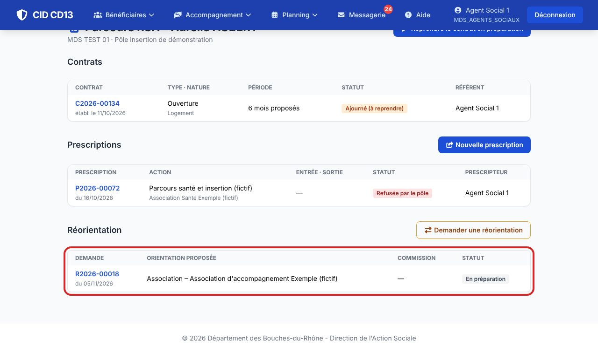
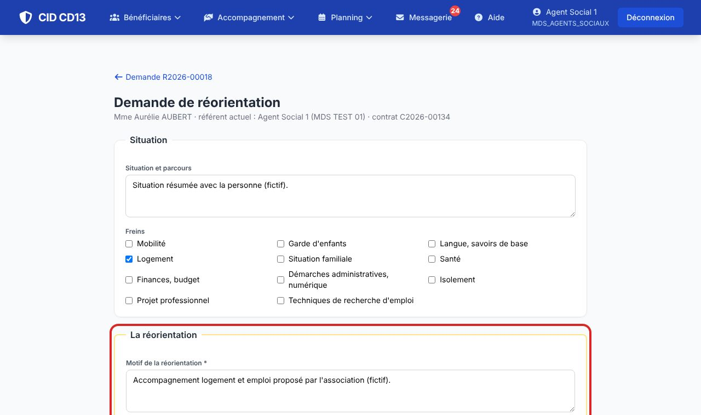
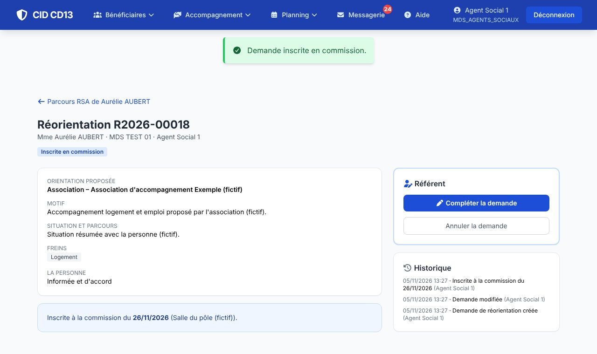

1Créer la demande

- Dans le Parcours RSA, cliquez sur Demander une réorientation. Les freins de la dernière prescription sont repris.
2Motiver la réorientation

- Le motif et l'orientation proposée (France Travail, CAF, association, autre) sont obligatoires ; l'organisme vient de la liste tenue par le pôle.
- Indiquez si la personne est informée et d'accord.
3Inscrire en commission

- Enregistrer et inscrire en commission : la demande rejoint la prochaine commission programmée de votre pôle, ou attend la suivante. Le pôle est prévenu.
Bon à savoir
- La décision vous arrive par la messagerie à la clôture de la commission.
- Acceptée : à la date d'effet, l'organisme retenu devient le référent RSA de la personne ; elle sort de la file active RSA de la MDS (plus d'alerte de renouvellement), son parcours reste consultable.
- Ajournée : la demande est présentée à la commission suivante, sans nouvelle saisie.
Et ensuite ?
Cliquez sur une image pour l'agrandir. Le cadre rouge montre où cliquer ou quoi remplir. Toutes les données affichées sont fictives.